| Nombre | Posición | Edad | Bibliografía | Portada |
|---|---|---|---|---|
| Samuel Kozlovský | Lateral izquierdo | 24 |
Defensor joven que aporta solidez en la banda izquierda y proyección ofensiva. |
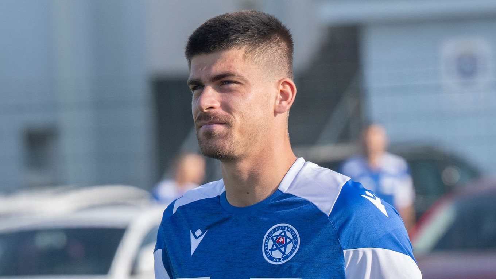 |
| Norbert Gyömbér | Defensa central | 32 |
Defensa central experimentado, reconocido por su fuerza física y liderazgo en la zaga. |
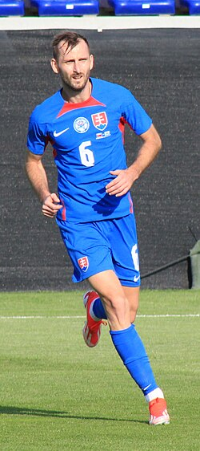 |
| Juraj Kucka | Mediocampista | 37 |
Veterano del mediocampo eslovaco, aporta experiencia, intensidad y llegada al área rival. |
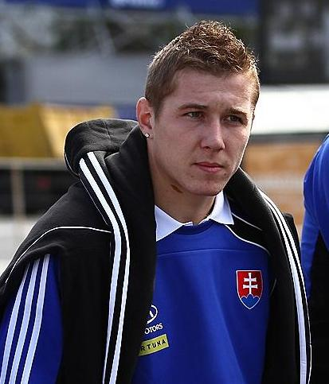 |
| Tomáš Suslov | Mediocampista ofensivo | 22 |
Joven creativo con gran visión de juego, destaca por su técnica y regate. |
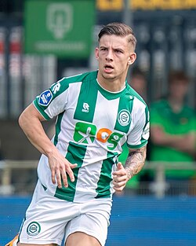 |
| Martin Koscelník | Lateral derecho | 29 |
Lateral derecho versátil, con capacidad para defender y sumarse al ataque. |
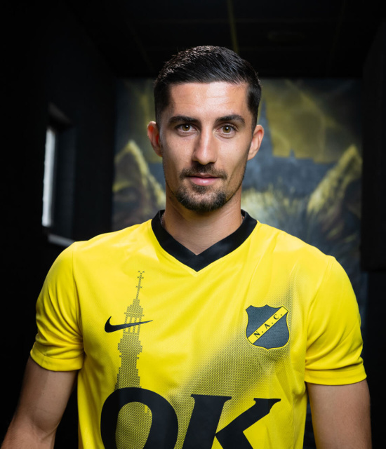 |
| Denis Vavro | Defensa central | 29 |
Central de gran físico y dominio aéreo, clave en el sistema defensivo eslovaco. |
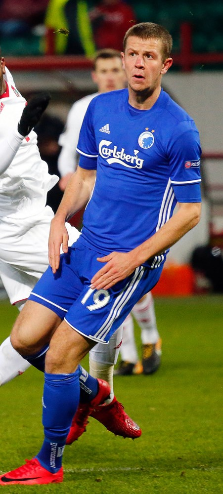 |
| Peter Pekarík | Lateral derecho | 37 |
Jugador histórico de la selección, aporta experiencia y disciplina táctica en defensa. |
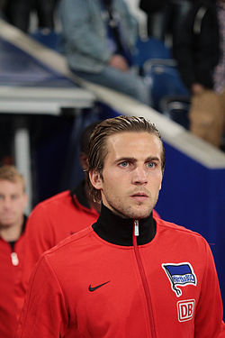 |
| Dávid Hancko | Defensa central | 26 |
Defensa con proyección internacional, combina fuerza defensiva con buena salida de balón. |
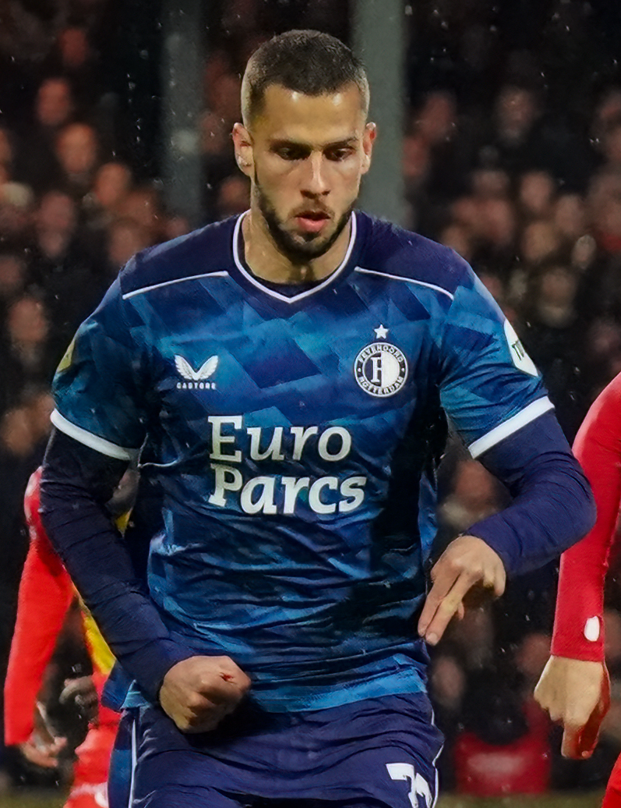 |
| Ondrej Duda | Mediocampista ofensivo | 30 |
Jugador creativo con experiencia en ligas europeas, aporta asistencias y llegada al arco. |
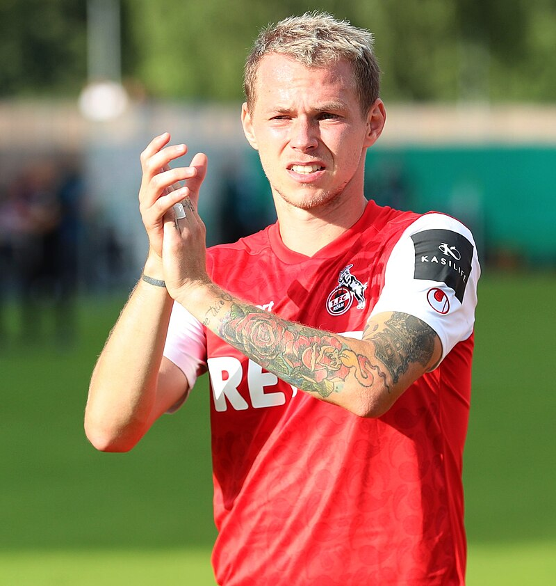 |
| Stanislav Lobotka | Mediocampista | 30 |
Mediocampista de contención, figura en el Napoli, reconocido por su control del juego. |
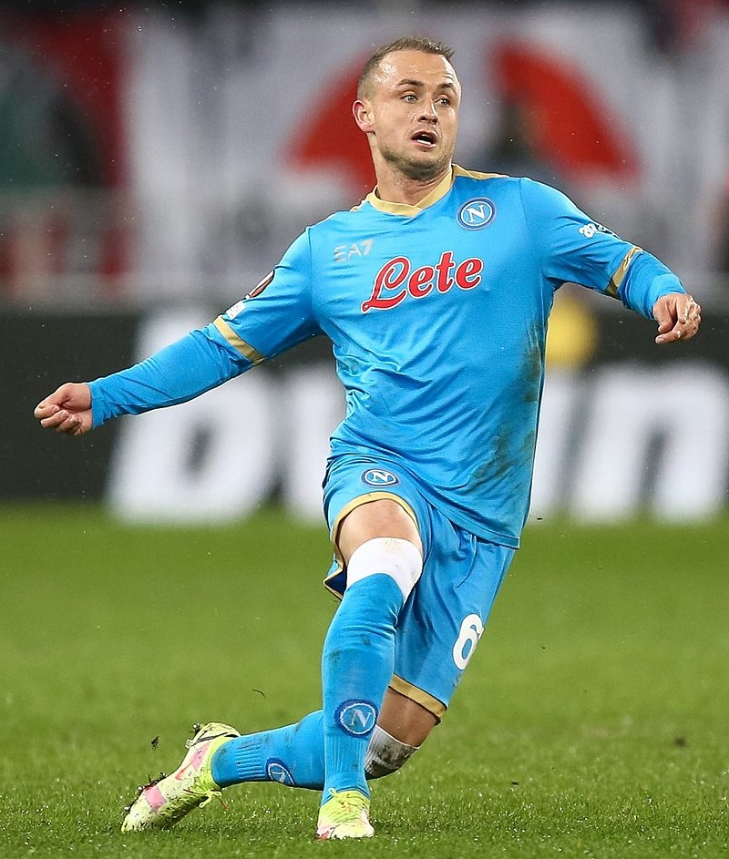 |
| David Strelec | Delantero | 23 |
Delantero joven y prometedor, con buen olfato goleador y movilidad en ataque. |
 |
| Milan Škriniar | Defensa central | 30 |
Capitán de la selección, defensa central de élite en Europa, líder y referente de Eslovaquia. |
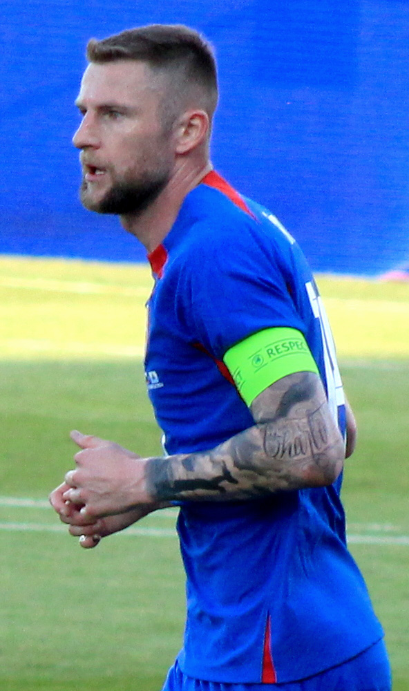 |